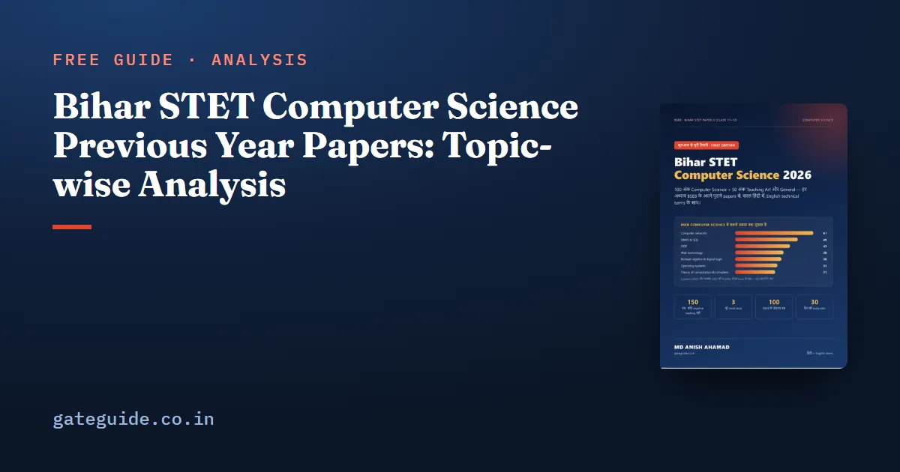

Bihar STET Computer Science Previous Year Papers: Topic-wise Analysis

The quickest way to understand the Bihar STET Computer Science paper is to count what it has already asked. We took five papers — the 2023 paper and four shifts of November 2025 — and labelled every one of their 500 Computer Science questions by topic. The result is a clear map of where the marks are, how the paper changed in 2025, and how often the board reuses its own questions.
In this guide
Key takeaways
- Five papers, 500 Computer Science questions, labelled one by one.
- Networks lead with about 12 questions per paper; DBMS, OOP, web technology and digital logic follow.
- Python arrived in 2025: four questions in two of the shifts.
- Every 2025 shift repeated 7 to 16 questions from the 2023 paper.
- Several official answer keys are wrong — know the correct answer and the key's answer.
The papers we counted
| Paper | Date | Computer Science questions |
|---|---|---|
| 2023 | STET 2023 | 100 |
| 2025 S1 | 3 November 2025, first shift | 100 |
| 2025 S2 | 3 November 2025, second shift | 100 |
| 2025 S2 | 4 November 2025, second shift | 100 |
| 2025 S1 | 7 November 2025, first shift | 100 |
Each question was matched to one unit of the syllabus by its content. Questions that fit no single unit — computer history, cables, general security questions and similar — were kept in an "other" group rather than forced into a unit.
Topic-wise count
| Topic | 2023 | 3 Nov S1 | 3 Nov S2 | 4 Nov S2 | 7 Nov S1 | Total |
|---|---|---|---|---|---|---|
| Computer networks | 10 | 9 | 16 | 11 | 15 | 61 |
| DBMS and SQL | 6 | 12 | 12 | 5 | 14 | 49 |
| Object-oriented programming | 15 | 8 | 10 | 6 | 4 | 43 |
| Web technology | 4 | 9 | 9 | 10 | 6 | 38 |
| Digital logic | 9 | 8 | 8 | 5 | 6 | 36 |
| Operating systems | 10 | 7 | 3 | 5 | 8 | 33 |
| Theory of computation | 5 | 7 | 6 | 8 | 5 | 31 |
| Algorithms | 7 | 3 | 7 | 5 | 5 | 27 |
| IoT and cloud | 4 | 6 | 5 | 4 | 4 | 23 |
| Computer organisation | 4 | 6 | 4 | 3 | 4 | 21 |
| Multimedia | 7 | 3 | 1 | 5 | 3 | 19 |
| C programming | 4 | 4 | 4 | 2 | 4 | 18 |
| Software engineering | 5 | 2 | 3 | 5 | 2 | 17 |
| Python | 0 | 4 | 0 | 4 | 2 | 10 |
| Machine learning and expert systems | 1 | 1 | 2 | 2 | 2 | 8 |
| E-commerce | 2 | 1 | 0 | 1 | 1 | 5 |
The 2023 column includes fewer labelled questions in the units because a larger share of that paper fell into the "other" group.
Five patterns that matter
1. Networks never drop. Networks were in the top two of every 2025 shift, peaking at 16 questions. The concepts are stable: OSI and TCP/IP layers, which device works at which layer, port numbers, IP address classes, ARP, DNS and DHCP, and TCP versus UDP.
2. DBMS swings, but stays big. Two shifts had 12 or more DBMS questions, one had only 5. The swing comes from SQL: some shifts asked many questions on commands, clauses and aggregate functions. Normal forms, keys and ACID appear every time.
3. OOP fell after 2023. It gave 15 questions in 2023 and between 4 and 10 in 2025. The questions are definitions — inheritance, polymorphism, constructors, abstract methods — so they remain cheap marks.
4. Web technology rose. From 4 in 2023 to 9 or 10 in most 2025 shifts: HTML tags and attributes, CSS, XML and the difference between client-side and server-side scripts.
5. Python is new. It appeared only in 2025, as short output questions. Expect it again.
How the board reuses questions
When we compared the 2025 shifts with the 2023 paper, every shift contained repeats — between 7 and 16 questions each, often with the same options in the same order. "What does DFD stand for?", "What is the main purpose of inheritance?" and "Which components are used in a PLA?" each appeared in more than one paper.
Even more useful: a few repeated questions carry an official answer key that disagrees with the textbook. Simplifying a K-map, the purpose of ARP and the closure of context-free languages are examples. The full list, with the textbook answer and the key's answer side by side, is in our guide to repeated questions.
What the 2023 and 2025 papers say about difficulty
Most questions are one-line recall: a full form, a definition, a port number, which layer a device works at. A smaller set needs working — a number conversion, a Boolean simplification, a Python or C output, the number of states of an automaton. These working questions are where prepared candidates separate themselves, because the recall questions are answered correctly by almost everyone who studied.
Assertion–reason questions became common in 2025, usually two or three per shift. They test the same facts, but you must judge both statements and whether the reason explains the assertion.
What to expect in the next paper
The 2025 shifts were similar to each other in structure even when individual units moved by a few questions. A fair expectation for the next paper is about 10 to 15 networks questions, 8 to 12 on DBMS and SQL, 5 to 10 each on OOP, web technology and digital logic, and a handful each on the remaining units, with two to four Python output questions and two or three assertion–reason questions. Treat any single shift's count as noise; the average across five papers is the more reliable guide for planning your time.
How to use this analysis
- Give time in proportion to the counts. A unit worth 12 questions deserves about three times the time of one worth 4.
- Solve the old papers. Because the board repeats questions, the 2023 paper is a direct source of marks.
- Make a list of tricky keys. Where the official key differs from the textbook, remember both.
- Do not skip small units. IoT, multimedia and e-commerce questions are short and easy.
The pattern of the whole paper is explained in our syllabus and exam pattern guide, and a day-by-day plan built on these counts is in the preparation strategy. The general half of the paper is covered in our guide to Teaching Art questions.
A note on method: one question was counted under one topic only, even when it touched two, such as a SQL question about transactions. Small differences of one or two questions per unit therefore mean little; the large gaps between units are what should guide your plan.
Summary
- Five papers, 500 questions counted.
- Networks (12 per paper), DBMS (10), OOP (9), web (8) and digital logic (7) lead.
- Python became a regular in 2025.
- 7 to 16 questions per 2025 shift were repeats from 2023.
- Learn the questions where the official key is unusual.
Frequently asked questions
Which topic is asked most in Bihar STET Computer Science?
Computer networks. Across the 2023 paper and four shifts of November 2025 it gave 61 of the 500 Computer Science questions, about 12 per paper. DBMS and SQL came second with 49, followed by object-oriented programming with 43 and web technology with 38.
Does Bihar STET repeat previous year questions?
Yes, more than most exams. Every November 2025 shift we checked contained between 7 and 16 questions that had appeared almost word for word in the 2023 paper. Practising the old papers is therefore one of the most direct ways to add marks.
Are Python questions asked in Bihar STET Computer Science?
Yes. The 2023 paper had none, but each 2025 shift had output-based Python questions, ten in all across the four shifts. They are short programs on functions, lists, dictionaries, slicing and try-finally, and they reward practice more than reading.
How many papers were used in this analysis?
Five: the 2023 Computer Science paper and four shifts of November 2025 (3 November first and second shifts, 4 November second shift and 7 November first shift). Each paper's 100 Computer Science questions were labelled by topic, giving 500 questions in total.
Sources
Dates, the pattern and pass marks are set by BSEB and can change. Always confirm at biharboardonline.bihar.gov.in. GATE Guide is not affiliated with BSEB.